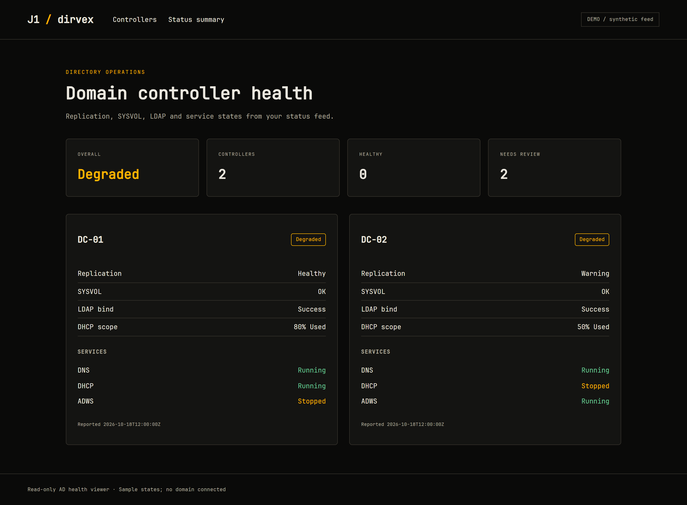
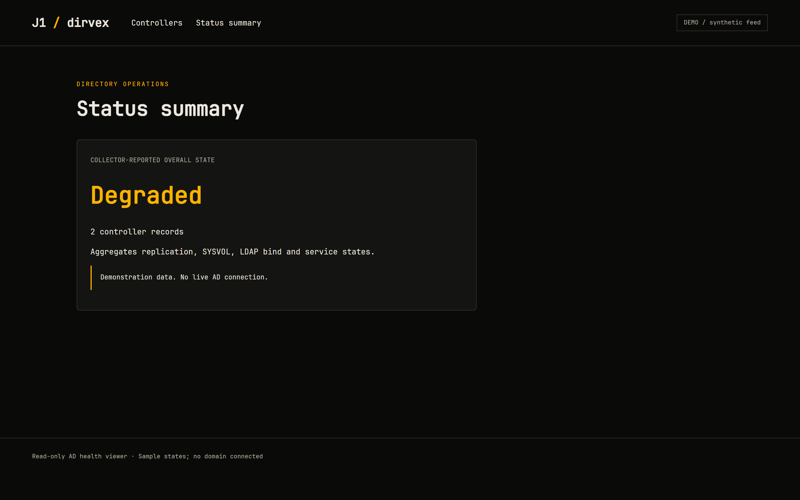

Know your domain controllers are healthy before someone asks.
dirvex reads a collector status feed and renders one calm view: overall state, controller count, and per-controller replication, SYSVOL, LDAP bind, DHCP scope and service status. No agents on your DCs, no write access, no public listener.
✓ Read-only by design ✓ Collector-fed, no credentials ✓ Loopback by default

/ running from the container against the synthetic feed.What one screen answers
Counters and controller rows are computed from the feed on every request. No dot is green because a template said so.
State before detail
Healthy, Degraded or Unknown, with controller count, healthy count and needs-review count above the fold.
Replication to services
Replication, SYSVOL, LDAP bind, DHCP scope and each service state, plus the timestamp the collector reported.
Stale data is not green
An unusable or stale feed reports Unknown and /readyz returns 503, so a monitor or load balancer sees the truth.
The shareable view
A second route renders the same feed without the operator chrome — safe for a wall display or a status link.

/public, same feed, no operator-only detail.Install
One service, one read-only feed directory. Compose builds the image locally; no registry credentials needed.
git clone https://github.com/OneByJorah/dirvex.git
cd dirvex
cp .env.example .env
docker compose up -d --build --waitcurl -fsS http://127.0.0.1:5000/healthz # -> ok
curl -fsS http://127.0.0.1:5000/readyz # 200 + overall state, 503 when the feed is stale
docker compose ps # -> healthyThe demo reports Degraded on purpose: the synthetic feed contains stopped services. Replace STATUS_DIRECTORY with your collector output to see live data.
Compatibility
| Surface | Status | Notes |
|---|---|---|
| Docker Compose v2 | Supported | Image builds from python:3.13-slim-bookworm, runs as UID 10001, read-only root |
| Collector feed | Supported | JSON in STATUS_DIRECTORY (default ./demo), mounted read-only at /data |
| Public inbound port | Not supported | Binds 127.0.0.1; expose it over Tailscale or an existing proxy |
| Windows / macOS package | Not applicable | Server-side dashboard: the supported artifact is the container |
FAQ
Does it need domain credentials?
No. dirvex reads a JSON status file. Whatever credentials your collector uses stay with the collector.
What happens when the feed stops updating?
Records older than STALE_AFTER_SECONDS are treated as stale: the dashboard reports Unknown and /readyz returns 503 instead of showing a comfortable green.
Is there a published container image or installer?
No published image and no desktop installer is claimed here. Compose builds the image from this repository, which is the artifact that exists today.
Does it store anything?
Nothing. The feed is read per request; there is no database, no cache and no write path.